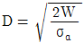
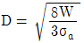
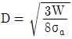
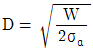
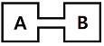
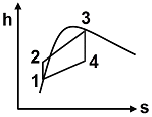
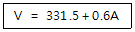
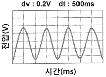

자동차정비기사 (2016-05-08 기출문제)
1과목: 일반기계공학
1. 선반작업으로 지름이 20㎜인 원통을 절삭할 때 주축의 회전이 1000rpm이고, 절삭력이 800N일 때 요구되는 절삭동력은 약 몇 kW인가?(오류 신고가 접수된 문제입니다. 반드시 정답과 해설을 확인하시기 바랍니다.)
- 0.8
- 1.2
- 1.8
- 3.6
(정답률: 22%)

2. 보일러와 같은 용기를 리벳이음으로 제작한 후 강판의 가장자리를 끌과 같은 공구를 사용하여 기밀을 유지하는 작업은?
- 커링(curling)
- 시밍(seaming)
- 코킹(caulking)
- 비딩(beading)
(정답률: 70%)
3. 리벳 이음의 일반적인 특징에 관한 설명으로 틀린 것은?
- 열응력에 의한 잔류 변형이 거의 없으므로 취성 파괴와 같은 현상은 잘 일어나지 않는다.
- 구조물 등에 사용할 때 현장조립의 경우 용접 작업보다 용이하다.
- 경합금과 같이 용접이 곤란한 재료의 결합에 사용이 가능하다.
- 쉽게 탈착되어 분해 조립이 용이하다.
(정답률: 74%)
4. 축방향에 정하중을 받는 경우 수나사의 바깥지름(d)을 구하는 식으로 가장 옳은 것은? (단, σɑ는 허용응력, W는 작용하중이며 수나사의 골지름은 바깥지름의 80%라고 가정한다.)




(정답률: 36%)
5. 스프링의 재료를 숏 피닝(shot peening) 하는 것은 주로 어떤 성질을 증가시키기 위한 것인가?
- 경도
- 탄성한계
- 피로한계
- 인장강도
(정답률: 48%)
6. 유압기계의 작동 유체가 구비되어야 할 조건으로 틀린 것은?
- 산화나 열에 안정할 것
- 유막 강도가 클 것
- 금속 마찰면의 윤활성이 좋을 것
- 압축성이 클 것
(정답률: 47%)
7. 어큐뮬레이터(accumulator)의 용도에 대한 설명으로 틀린 것은?
- 밸브를 개폐하는 것에 의하여 생기는 오일 해머나 압력노이즈에 의한 충격 압력을 방지한다.
- 폐회로에서의 유온변화에 의한 오일의 팽창, 수축에 의하여 생기는 유량의 변화를 보충해준다.
- 유압펌프에서 발생하는 맥동을 흡수하고, 진동이나 소음방지에 사용한 다.
- 최대 압력을 제한하여 압력 상승에 따른 밸브나 유압 기기의 손상을 방지한다.
(정답률: 40%)
8. 강에 비교한 주철의 일반적인 특징에 대한 설명으로 틀린 것은?
- 용융점이 낮아 주조하기가 쉽다.
- 인성이 높다.
- 내 마멸성이 우수하다.
- 가격이 저렴한 편이다.
(정답률: 62%)
9. 알루미늄의 일반적인 특징을 설명한 것으로 틀린 것은?
- 원료는 수반토 등을 주성분으로 하는 보크사이트 원광석을 주로 이용한다.
- 용융점은 약 660℃ 정도이며 면심입방격자를 이룬다.
- 염산, 황산 등에 강해서 산성물질의 보관용기로도 적합하다.
- 유동성이 작고, 수축률이 큰 편이다.
(정답률: 63%)
10. 어떤 동력전달 축에서 회전 동력이 21kW이고, 1200rpm으로 회전할 때 이축에 작용하는 토크는 약 몇 N·m인가?
- 123
- 145
- 167
- 191
(정답률: 28%)
11. 단면계수 Z, 허용굽힘응력 σɑ인 단면이 견딜 수 있는 굽힘 모멘트 M은?
- M = σɑ/Z
- M = Z/σɑ
- M = (σɑ×Z)2
- M = σɑ×Z
(정답률: 21%)
12. 윔과 윔기어 전동장치에서 윔의 리드가 4π ㎜, 윔기어의 피치원 지름이 100㎜일 때, 감속비는 얼마인가?
- 1/25
- 1/20
- 1/15
- 1/10
(정답률: 31%)
13. 정밀 주조법의 일종으로 정밀한 금형에 용융금속을 고압, 고속으로 주입하여 주물을 얻는 방법으로 AI합금, Mg합금 등에 주로 사용되는 주조법은?
- 원심주조법
- 다이캐스팅
- 셸몰드법
- 연속주조법
(정답률: 77%)
14. 강에 인성을 부여하기 위하여 A1 변태점 이하의 온도에서 열처리를 하여 신율 및 충격치를 개선시키는 것은?
- 뜨임
- 불림
- 풀림
- 담금질
(정답률: 59%)
15. 재료를 열간 또는 냉간가공하기 위해 회전하는 2개의 롤러(roller)사이에 금속재료를 통과시켜 성형하는 소성가공법은?
- 단조 가공
- 압출 가공
- 인발 가공
- 압연 가공
(정답률: 58%)
16. 이론 토출량이 22 103cm3/min인 펌프에서 실제 토출량이 20 103cm3/min로 나타날 때 펌프의 용적 효율은 약 몇 %인가?
- 72
- 79
- 84
- 91
(정답률: 43%)
17. 세로탄성계수가 E인 재료에서 인장응력이 σ가 발생되었다. 다른 재료(세로 탄성계수는 2E)에서 인장하중을 가하여 발생한 인장응력이 4σ라면 이 재료에 저장된 단위체적당 탄성에너지는 앞선 재료의 몇 배가 되는가?
- 2
- 4
- 8
- 16
(정답률: 32%)
18. 단면적이 A, 길이가 L인 봉에 인장하중 P를 가할 시 늘어나는 길이 ᐃL은? (단, 이 봉의 세로탄성계수는 E이다.)
- ᐃL=PE/AL
- ᐃL=PL/AE
- ᐃL=PA/EL
- ᐃL=EL/PA
(정답률: 41%)
19. 공작기계로 가공된 평면이나 원통면 등을 정밀하게 다듬질하기 위한 수공구는?
- 스크레이퍼
- 다이스
- 정
- 탭
(정답률: 66%)
20. 축 방향으로 큰 하중을 받으면서 운동을 전달하는 데 적합하며 특히 교번 하중을 받을 때 사용하기 적합한 것은?
- 삼각 나사
- 사각 나사
- 관용 나사
- 유니파이 나사
(정답률: 45%)
2과목: 기계열역학
21. 냉동실에서의 흡수 열량이 5냉동통(RT)인 냉동기의 성능계수(COP)가 2, 냉동기를 구동하는 가솔린 엔진의 열효율이 20%, 가솔린의 발열량이 43000kJ/kg일 경우, 냉동기 구동에 소요되는 가솔린의 소비율은 약 몇 kg/h인가?
- 1.28kg/h
- 2.54kg/h
- 4.04kg/h
- 4.85kg/h
(정답률: 39%)
22. 카르노 열기관 사이클 A는 0℃와 100℃ 사이에서 작동되며 카르노 열기관 사이클 B는 100℃와 200℃ 사이에서 작동된다. 사이클 A의 효율(ηA)과 사이클 B의 효율(ηB)을 각각 구하면?
- ηA=26.80% ηB=50.00%
- ηA=26.80% ηB=21.14%
- ηA=38.75% ηB=50.00%
- ηA=38.75% ηB=21.14%
(정답률: 49%)
23. 냉동기 냉매의 일반적인 구비조건으로서 적합하지 않은 사항은?
- 임계 온도가 높고, 응고 온도가 낮을 것
- 증발열이 적고, 증기의 비체적이 클 것
- 증기 및 액체의 점성이 작을 것
- 부식성이 없고, 안정성이 있을 것
(정답률: 65%)
24. 밀폐계의 가역 정적변화에서 다음 중 옳은 것은? (단, U : 내부에너지, Q : 전달된 열, H : 엔탈피, V : 체적, W : 일이다)
- dU = dQ
- dH = dQ
- dV = dQ
- dW = dQ
(정답률: 50%)
25. 그림과 같이 중간에 격벽이 설치된 계에서 A에는 이상기체가 충만 되어 있고, B는 진공이며, A와 B의 체적은 같다. A와 B사이의 격벽을 제거하면 A의 기체는 단열비가역 자유팽창을 하여 어느 시간 후에 평형에 도달하였다. 이 경우의 엔트로피 변화 ᐃs는? (단, Cu는 정적비열, Cp는 정압비열, R은 기체상수이다.)

- △s = Cu In2
- △s = Cu In2
- △s = 0
- △s = R In2
(정답률: 40%)
26. 질량 1kg의 공기가 밀폐계에서 압력과 체적이 100kP, 1m3이었는데 폴리트로픽 과정(PVn=일정)을 거쳐 체적이 0.5m3이 되었다. 최종 온도(T2)와 내부 에너지의 변화량(ᐃU)은 각각 얼마인가? (단, 공기의 기체상수는 287J/kg‧K, 정적비열은 718J/kg‧K, 정압비열은 10⑤J/kg‧K 폴리트로프 지수는 1.3이다)
- T2=459.7 K, ᐃU=111.3kJ
- T2=459.7 K, ᐃU=79.9kJ
- T2=428.9 K, ᐃU=80.5kJ
- T2=428.9 K, ᐃU=57.8kJ
(정답률: 42%)
27. 과열증기를 냉각시켰더니 포화영역 안으로 들어와서 비체적이 0.2327m3/kg 되었다. 이때의 포화액과 포화증기의 비체적이 각각 1.079x10-3m3/kg, 0.5243m3/kg이라면 건도는?
- 0.964
- 0.772
- 0.653
- 0.443
(정답률: 22%)
28. 비열비가 k인 이상기체로 이루어진 시스템이 정압과정으로 부피가 2배로 팽창할 때 시스템이 한 일이 W, 시스템에 전달된 열이 Q일 때 W/Q는 얼마인가? (단, 비열은 일정하다.)(오류 신고가 접수된 문제입니다. 반드시 정답과 해설을 확인하시기 바랍니다.)
- k
- 1/k
- k/(k-1)
- (k-1)/k
(정답률: 39%)
29. 공기 1kg을 정적과정으로 40℃에서 120℃까지 가열하고, 다음에 정압과정으로 120℃에서 220℃까지 가열한다면 전체 가열에 필요한 열량은 약 얼마인가? (단, 정압비열은 1.00kJ/kg‧K, 정적비열은 0.71kJ/kg‧K이다.)
- 127.8kJ/kg
- 141.5kJ/kg
- 156.8kJ/kg
- 185.2kJ/kg
(정답률: 35%)
30. 이상기체에서 엔탈피 h와 내부에너지 u, 엔트로피 s 사이에 성립하는 식으로 옳은 것은? (단, T는 온도, v는 체적, P는 압력이다.)
- Tds = dh＋vdP
- Tds = dh－vdP
- Tds = du－Pdv
- Tds = dh＋d(Pv)
(정답률: 31%)
31. 온도 T2인 저온체에서 열량 QA를 흡수해서 온도가 T1인 도온체로 열량 QR를 방출할 때 냉동기의 성능계수(coefficient of performance)는?
- (QR-QA)/QA
- QR/QA
- QA/(QR-QA)
- QA/QR
(정답률: 50%)
32. 대기압 100kPa에서 용기에 가득 채운 프로판을 일정한 온도에서 진공펌프를 사용하여 2kPa 까지 배기하였다. 용기 내에 남은 프로판의 중량은 처음 중량의 몇 %정도 되는가?
- 20%
- 2%
- 50%
- 5%
(정답률: 40%)
33. 오토 사이클의 압축비가 6인 경우 이론 열효율은 약 몇 %인가? (단, 비열비=1.4 이다)
- 51
- 54
- 59
- 62
(정답률: 53%)
34. 그림과 같은 Rankine 사이클의 열효율은 약 몇 %인가? (단, h1=191.8kJ/kg, h2=193.8kJ/kg, h3=2799.5kJ/kg, h4=2007.5kJ/kg이다.)

- 30.3%
- 39.7%
- 46.9%
- 54.1%
(정답률: 45%)
35. 온도가 150℃인 공기 3kg이 정압 냉각되어 엔트로피가 1.063kJ/K 만큼 감소되었다. 이때 방출된 열량은 약 몇 kJ인가? (단, 공기의 정압비열은 1.01kJ/kg‧K이다.)
- 27
- 379
- 538
- 715
(정답률: 22%)
36. 열역학적 상태량은 일반적으로 강도성 상태량과 용량성 상태량으로 분류할 수 있다. 강도성 상태량에 속하지 않는 것은?
- 압력
- 온도
- 밀도
- 체적
(정답률: 58%)
37. 수소(H2)를 이상기체로 생각하였을 때, 절대압력 1MPa, 온도 100℃에서의 비체적은 약 몇 m3/kg인가? (단, 일반기체상수는 8.3145kJ/kmol‧K이다.)
- 0.781
- 1.26
- 1.55
- 3.46
(정답률: 33%)
38. 20℃의 공기 5kg이 정압 과정을 거쳐 체적이 2배가 되었다. 공급한 열량은 몇 약 kJ인가? (단, 정압비열은 1kJ/kg‧K이다.)
- 1465
- 2198
- 2931
- 4397
(정답률: 25%)
39. 30℃, 100kPa의 물을 800kPa까지 압축한다. 물의 비체적이 0.001m3/kg로 일정하다고 할 때, 단위 질량당 소요된 일(공업일)은?
- 167J/kg
- 602J/kg
- 700J/kg
- 1400J/kg
(정답률: 32%)
40. 밀도 1000kg/m2인 물이 단면적 0.01m2인 관속을 2m/s의 속도로 흐를 때, 질량유량은?
- 20kg/s
- 2.0kg/s
- 50kg/s
- 5.0kg/s
(정답률: 52%)
3과목: 자동차기관
41. 부동액으로 많이 쓰이는 에틸렌글리콜의 특성이 아닌 것은?
- 불연성이다.
- 휘발되지 않는다.
- 팽창계수가 크다.
- 금속부식성이 없다.
(정답률: 60%)
42. 전자제어 가솔린기관에서 공전속도 조절에 해당되지 않은 것은?
- 에어컨 컴프레서 작동 시 RPM보상 제어
- 노크 제어
- 대시포트 제어
- 패스트 아이들 제어
(정답률: 52%)
43. 유압식 밸브 리프터의 특징이 아닌 것은?
- 밸브 간극을 자동적으로 조정한다.
- 밸브 개폐시기를 정확히 조절하나 소음이 다소 심하다.
- 오일의 비압축성과 윤활장치의 순환입력을 이용하여 작동한다.
- 오일이 완충작용을 하므로 밸브기구의 내구성이 향상된다.
(정답률: 70%)
44. 운행 자동차 배출가스 정밀검사 유효기간에 대한 설명으로 틀린 것은?
- 차량 2년 경과하여 정밀검사 대상이 된 사업용 승용자동차의 검사유효 기간은 1년이다.
- 차령 2년 경과하여 정밀검사 대상이 된 사업용 기타자동차의 검사유효 기간은 1년이다.
- 차령 3년 경과하여 정밀검사 대상이 된 비사업용 기타자동차의 검사유효기간은 1년이다.
- 차령 4년이 경과하여 정밀검사 대상이 된 비사업용 승용자동차의 검사 유효기간은 1년이다.
(정답률: 58%)
45. 자동차 기관의 실린더 내 압력변화를 측정하여 작성한 지압선도를 통해 파악 가능한 것이 아닌 것은?
- 회전속도
- 점화시기
- 압력상승속도
- 사이클 진행과정
(정답률: 68%)
46. 기관의 열효율이 30%이고, 출력이 80PS, 연료의 저위 발열량이 10,000kcal/kgf일 때 1시간 동안의 연료 소비량은?
- 약 8.5kgf/h
- 약 10.1kgf/h
- 약 12.6kgf/h
- 약 16.9kgf/h
(정답률: 14%)
47. 디젤기관의 분사펌프에서 타이머 역할로 옳은 것은?
- 분사량 조절
- 분사압력 조절
- 분사시기 조절
- 분사속도 조절
(정답률: 72%)
48. 연소실 내부의 스월비(Swirl Ratio)를 계산하는 공식으로 옳은 것은?
- 기관속도/스월속도
- 스월속도/기관속도
- 스월길이/기관행정
- 기관행정/스월길이
(정답률: 65%)
49. 전자제어 가솔린기관 연료펌프 구동 전류가 정상 값보다 높아질 수 있는 원인이 아닌 것은?
- 연료펌프 릴레이의 접점이 녹았을 때
- 연료펌프 베어링이 손상되어 무거워졌을 때
- 연료압력 조정기 내의 불량으로 연료압력이 상승되었을 때
- 리턴호스가 막혔을 때
(정답률: 55%)
50. 수온 센서에 대한 설명 중 옳지 않은 것은?
- 시동 시 보정 연료량을 결정
- 시동 시 기본 아이들 제어 듀티량을 결정
- 냉각 팬 제어 시 입력신호로 이용
- 대시 포트 제어 시 연료 증량을 결정
(정답률: 65%)
51. 전자제어 가솔린엔진에서 운전 중 연료를 차단(fuel cut)하는 경우로 가장 적합한 것은?
- 일정 회전속도(red zone) 이상일 때
- 변속 충격 발생 시
- 산소 센서가 고장일 때
- 퍼지 컨트롤 밸브가 누설될 때
(정답률: 75%)
52. 기관의 성능 효율을 높이기 위해 고려해야 할 연소실의 형상으로 틀린 것은?
- 연소실 내에 가열되기 쉬운 돌출부를 만들지 않는다.
- 압축행정 시 강한 와류를 일으킬 수 있어야 한다.
- 연소실 체적에 대한 표면적을 최소화 한다.
- 화염 전파 시간을 가능한 길게 한다.
(정답률: 74%)
53. 압축천연가스(CNG)의 특징으로 거리가 먼 것은?
- 전 세계적으로 매장량이 풍부하다.
- 옥탄가가 매우 낮아 압축비를 높일 수 없다.
- 분진 유황이 거의 없다.
- 기체연료임으로 엔진체적효율이 낮다
(정답률: 68%)
54. 전자제어 가솔린 기관에서 ECU의 A/D 컨버터 분해 능력이 16 bit인 경우 스로틀위치센서의 입력 값이 0~5V라면 출력은 얼마 이상 차이가 발생해야 데이터 값이 달라진 것으로 간주될 수 있는가?
- 약 0.08mV
- 약 0.8mV
- 약 3.12mV
- 약 31.2mV
(정답률: 44%)
55. 자동차 기관에서 배출되는 가스의 종류에 해당 되지 않는 것은?
- 배기가스
- 블로바이가스
- 연료증발가스
- 베이퍼록가스
(정답률: 78%)
56. 가솔린 기관에서 흡입 연료가 이론혼합비로 연소될 때 가장 많이 발생되는 배기가스는?
- H2O
- HC
- CO
- NO2
(정답률: 65%)
57. 기관의 흡입장치에서 흡입효율을 향상시키기 위한 방법으로 거리가 먼 것은?
- 과급 방법
- 밸브개폐시기 제어 방법
- 배기장치의 배압감소 방법
- 흡기다기관의 길이 및 단면적을 고정하는 방법
(정답률: 62%)
58. 지르코니아 산소센서의 주요 구성 물질은?
- 강＋주석
- 백금＋주석
- 지르코니아＋백금
- 지르코니아＋주석
(정답률: 81%)
59. 전자제어 가솔린기관에서 공연비 피드백제어의 작동 조건을 설명한 것으로 거리가 먼 것은?
- 주행 중 급가속 시
- 산소 센서가 활성화 온도 이상일 때
- 냉각수 온도가 일정 온도 이상일 때
- 프로틀 포지션 센서의 아이들 접점이 ON 시
(정답률: 52%)
60. 점화순서가 1-5-3-6-2-4인 직렬 6기통 4행정 엔진에서 제6번 실린더의 흡기밸브와 배기밸브가 같이 열려있는 상태로 되어 있다. 이때 제 1번 피스톤이 있는 위치로 옳은 것은?
- 흡입 초
- 배기 초
- 압축 말
- 폭발 말
(정답률: 54%)
4과목: 자동차새시
61. EBD(Electronic Brake-force Distribution)장치의 특징에 해당되지 않는 것은?
- 제동거리를 단축시킨다.
- 선회 제동 시 안전성이 확보된다.
- 마찰계수가 낮은 도로에서 출발 또는 가속 시 구동력을 저하시킨다.
- 급제동 시 뒷바퀴가 먼저 고착되어 미끄러짐이 발생하는 것을 방지한다.
(정답률: 69%)
62. 자동차에 적용된 디스크 브레이크의 장점이 아닌 것은?(오류 신고가 접수된 문제입니다. 반드시 정답과 해설을 확인하시기 바랍니다.)
- 자기작동 작용이 없으므로 고속에서 반복적으로 사용하여도 제동력 변화가 적다.
- 디스크가 대기 중에 노출되어 회전하므로 냉각성능이 커 제동 성능이 저하된다.
- 패드 면적이 작고, 제한되어 있으므로 낮은 유압으로 충분한 제동 효과를 얻을 수 있다.
- 디스크에 물이나 진흙 등이 묻어도 원심력에 의해 잘 떨어져 나가므로 제동효과의 회복이 빠르다.
(정답률: 22%)
63. 타이어와 노면의 점착력에 대한 설명으로 옳은 것은?
- 자동차가 주행을 하기 위해서는 전 주행저항보다 구동력이 작아야 한다.
- 타이어가 구동바퀴로 작용하는 경우 타이어와 노면사이에 미끄럼에 대한 마찰저항은 불필요 하다.
- 큰 구동력을 얻기 위해서는 구동 바퀴의 하중을 작게 해야 할 필요가 있다.
- 구동바퀴의 구동력이 구동바퀴의 점착력보다 크면 바퀴는 슬립한다.
(정답률: 61%)
64. 자동변속기 제어 컴퓨터(TCU)의 출력 요소는?
- 유온 센서
- 차속 센서
- 펄스 제너레이터
- 변속 제어 솔레노이드 밸브
(정답률: 59%)
65. 자동변속기 차량의 토크컨버터에서 출발 시 토크증대가 되도록 스테이터를 고정시켜주는 것은?
- 오일펌프
- 펌프 임펠러
- 원웨이 클러치
- 가이드 링
(정답률: 73%)
66. 앞 현가장치에서 저속 시미현상의 원인으로 거리가 먼 것은?
- 쇽업소버의 작동불량
- 앞 현가 스프링의 쇠약
- 바퀴의 정적평형의 불량
- 타이어 공기압 과대
(정답률: 66%)
67. 휠 얼라이먼트 시험기의 측정 항목이 아닌 것은?
- 토인
- 캐스터
- 휠 밸런스
- 킹핀 경사각
(정답률: 60%)
68. 자동변속기 차량에서 저온 시 오일의 점도가 높아지면 나타나는 증상은?
- 변속기 내부의 제어밸브 등의 응답성이 저하하여 작동이 활발하지 못하게 된다.
- 오일펌프의 흡입저항이 감소하여 캐비테이션 현상이 잘 발생될 수 있다.
- 유동에 따르는 압력손실이 감소하여 자동 변속기 전체의 효율이 상승한 다.
- 오일펌프의 동력손실이 감소하여, 기계효율이 상승한다.
(정답률: 82%)
69. 타이어의 소음 중 차량이 건조하고 평탄한 노면에서 급발진, 급제동, 급선회를 할 때 트레드가 노면에서 반복적으로 미끄러지면서 발생하는 소음은?
- 스퀼소음
- 탄성소음
- 비트소음
- 하시니스
(정답률: 67%)
70. ABS의 고장진단 시 점검사항으로 거리가 먼 것은?
- 기관의 출력 상태
- ABS 경고등 점등 상태
- 휠스피드 센서와 톤 휠 사이의 간극
- 하이드로닉 유닛의 작동음 유무
(정답률: 69%)
71. 전자제어 현가장치(ECS)에서 급가속 시의 차고제어로 맞는 것은?
- 앤티 롤 제어
- 앤티 다이브 제어
- 스카이훅 제어
- 앤티 스쿼트 제어
(정답률: 56%)
72. 전자제어 조향장치에서 솔레노이드 밸브를 제어하여 유압을 조절하고 공급 유량의 바이패스를 통해 조향조작력을 제어하는 방식은?
- 유압반력 제어 방식
- 유량 제어 방식
- 유속 제어 방식
- 회전수 제어 방식
(정답률: 54%)
73. 쇼크 업쇼버가 설치된 스트럿과 컨트롤 암이 조향너클과 일체로 연결되어 있는 현가장치의 형식은?
- 맥퍼슨형
- 트레일링암형
- 위시본형
- SLA형
(정답률: 79%)
74. 변속비 1/2, 차동장치의 링기어 잇수 42, 드라이브 피니어 잇수 7, 오른쪽 앞뒤의 바퀴만 잭에 들려 있는 상태에서 추진축이 1800rpm으로 회전할 때 오른쪽 뒷바퀴의 최전 수는?
- 100rpm
- 300rpm
- 600rpm
- 900rpm
(정답률: 54%)
75. 휠 브레이크식 주차(핸드) 브레이크에서 양쪽 바퀴에 조작력이 동일하게 전달되도록 하는 것은?
- 래칫
- 이퀄라이저
- 풀 백 스프링
- 리턴 스프링
(정답률: 64%)
76. 기관의 회전속도가 일정할 때 토크컨버터의 회전력이 가장 큰 경우는?
- 터빈속도가 느릴 때
- 펌프의 속도가 느릴 때
- 펌프와 터빈의 속도가 같을 때
- 스테이터가 회전하고 있을 때
(정답률: 33%)
77. 축간거리가 4m, 바깥쪽 바퀴의 조향각이 30°이고, 스크러브 에이디어스 (scrub radius)가 30㎝인 자동차의 최소 회전반경은?
- 4.0m
- 4.3m
- 8.0m
- 8.3m
(정답률: 63%)
78. 동력전달장치 중 프로펠러 샤프트(추진축)의 길이 변화를 목적으로 이용되는 이음 방식은?
- 십자형 이음
- 플렉시블 이음
- 트러니언 이음
- 슬립 이음
(정답률: 72%)
79. 자동차 주행저항을 산출함에 있어 자동차 주량(kgf)이 적용되지 않는 저항 은?
- 가속저항
- 구름저항
- 등판저항
- 공기저항
(정답률: 78%)
80. 자동차에 주로 사용되는 수동 변속기구의 형식이 아닌 것은?
- 부동 기어식
- 동기 치합식
- 섭동 기어식
- 상시 치합식
(정답률: 70%)
5과목: 자동차전기
81. 보기는 후방 주차보조 시스템의 후방 감지 센서와 관련된 초음파 전송 속도 공식이다. 이 공식의 'A'에 해당하는 것은?

- 대기습도
- 대기온도
- 대기밀도
- 대기건조도
(정답률: 56%)
82. 점화플러그의 점화 요구 전압에 대한 설명으로 옳은 것은?
- 급가속 시 높아진다.
- 전극의 온도가 높아지면 높아진다.
- 기관의 온도가 상승하면 높아진다.
- 흡입 혼합기의 온도가 높아지면 높아진다.
(정답률: 52%)
83. 전압 12V, 용량 60Ah인 배터리 2개를 직렬로 연결하여 동시에 충전 시키는 방법으로 가장 알맞은 것은?
- 24V, 6A 정도로 충전하는 것이 좋다.
- 12V, 6A 정도로 충전하는 것이 좋다.
- 24V, 12A 정도로 충전하는 것이 좋다.
- 12V, 12A 정도로 충전하는 것이 좋다.
(정답률: 54%)
84. 하이브리드 자동차의 컨버터(Converter)와 인버터(Inverter)의 전기특성표현으로 옳은 것은?
- 컨버터(Converter) : AC에서 DC로 변환, 인버터(ONverter) : DC에서 AC로 변환
- 컨버터(Converter) : DC에서 AC로 변환, 인버터(ONverter) : AC에서 DC로 변환
- 컨버터(Converter) : AC에서 AC로 승압, 인버터(ONverter) : DC에서 DC로 승압
- 컨버터(Converter) : DC에서 DC로 승압, 인버터(ONverter) : AC에서 AC로 승압
(정답률: 70%)
85. 자동차 및 자동차부품의 성능과 기준에 관한 규칙에서 정한 방향지시등의 1군 간 점멸 횟수는?
- 10＋30회
- 30＋30회
- 50＋30회
- 90＋30회
(정답률: 65%)
86. 전자제어 에어컨 장치의 제어 기능으로 볼 수 없는 것은?
- 인히비터 제어
- 인테이크 제어
- 풍량 제어
- 실내온도 제어
(정답률: 69%)
87. 자동차 충전장치에서 전압조정기의 제너다이오드는 어떤 상태에서 전류가 흐르게 되는가?
- 브레이크다운 전압에서
- 배터리 전압보다 낮은 전압에서
- 로터코일에 전압이 인가되는 시점에서
- 브레이크다운 전류에서
(정답률: 60%)
88. 점화코일의 1차코일 저항값이 20℃일 때 4Ω이었다. 작동 시(80℃)의 저항값은? (단, 구리선의 저항온도계수는 0.004이다)
- 1.28Ω
- 1.96Ω
- 4.32Ω
- 4.96Ω
(정답률: 17%)
89. 하이브리드 자동차에서 정차 시 연료 소비절감, 유해 배기가스 저감을 위해 기관을 자동으로 정지시키는 기능은?
- 아이들 스탑 기능
- 고속 주행 기능
- 브레이크 부압 보조기능
- 정속 주행 기능
(정답률: 83%)
90. 전압강하의 특징에 대한 설명 중 서리가 먼 것은?
- 전압강하는 직별‧병렬회로 모두 발생한다.
- 전압강하는 회로에 전류가 흐를 때만 발생한다.
- 회로에 존재하는 전압강하의 합은 전원 전압과 같다.
- 전압강하는 회로에 존재하는 저항이 2개 이상 이어야 발생한다.
(정답률: 48%)
91. 센서로 이용되고 있는 포토트랜지스터에 대한 설명으로 틀린 것은?
- 광량의 변화가 전류의 변환으로 치환되는 원리를 이용한 것이다.
- 트랜지스터의 베이스에 빛이 닿으면 베이스 전류의 증가로 컬렉터 전류가 흐른다.
- 증폭작용에 의해 포토다이오드보다 변환효율이 좋은 전기신호를 얻을 수 있다.
- 빛이 들어오면 ECU에서 베이스 전원을 변화시키고, 컬렉터 전압이 흘러 고전압이 발생된다.
(정답률: 54%)
92. AGM(Absorbent Glass Mat) 배터리에 대한 설명으로 거리가 먼 것은?
- 극판의 크기가 축소되어 출력 밀도가 높아졌다.
- 유리섬유 격리판을 사용하여 충전 사이클 저항성이 향상되었다.
- 높은 시동 전류를 요구하는 기관의 시동성을 보장한다.
- 셀-플러그는 밀폐되어 있기 때문에 열 수 없다.
(정답률: 36%)
93. 자동차의 에어컨시스템에서 팽창밸브의 역할로 옳은 것은?
- 냉매의 압력을 저온, 저압으로 미립화하여 증발기 내에 공급해 주는 역할을 한다.
- 컴프레서와 콘덴서 사이에 위치, 고온-고압의 냉매를 팽창시켜 저온-저 압으로 콘덴서에 공급한다.
- 컴프레서의 흡입구에 위치하며 순환을 마친 냉매를 팽창시켜 액체 상태로 컴프레서에 공급한다.
- 에어컨 회로 내의 공기 유입 시 유입된 공기를 팽창시켜 외부로 배출하는 역할을 한다.
(정답률: 65%)
94. 직권전동기의 특성으로 틀린 것은?
- 부하가 감소되면 회전속도가 증가된다.
- 부하가 걸렸을 때 회전토크가 크게 된다.
- 역기전력은 회전속도에 비례한다.
- 단자전압은 부하전류가 클수록 높게 한다.
(정답률: 29%)
95. 그림의 파형이 나타내는 센서는?

- 흡기온도센서
- 냉각수온센서
- 대기압센서
- 산소센서
(정답률: 69%)
96. 전조등 회로와 같이 비교적 큰 전류가 흐르는 회로에 사용되는 배선 방식을 무엇이라 하는가?
- 단선식 배선
- 접지식 배선
- 왕복식 배선
- 복선식 배선
(정답률: 69%)
97. 아날로그 멀티미터로 다이오드의 불량 여부를 점검할 때, 가장 적합한 레인지의 위치는?
- 직류 전압레인지
- 전류레인지
- 저항레인지
- 교류 전압레인지
(정답률: 69%)
98. 플렉스레이(FlexRay) 데이터 버스의 특징으로 거리가 먼 것은?
- 데이터 전송은 2개의 채널을 통해 이루어진다.
- 실시간 능력은 해당 구성에 따라 가능하다.
- 데이터를 2채널로 동시에 전송한다.
- 데이터 전송은 비동기방식이다.
(정답률: 61%)
99. 코일의 상호 인덕턴스가 0.5 H이고, 1차 코일에 전류를 0.1초 사이에 4A에서 2A로 변화 시키면 2차 코일에 발생하는 기전력은?
- 4V
- 6V
- 8V
- 10V
(정답률: 42%)
100. 에어백시스템에 대한 설명으로 옳은 것은?
- 후방 충격에서만 작동한다.
- 전개된 에어백은 계속 그 상태를 유지한다.
- 전방에 일정 이상의 강한 충격을 받았을 때 전개되고 수축된다.
- 경고등이 점등되어도 강한 충격 발생 시 전개 된다.
(정답률: 74%)